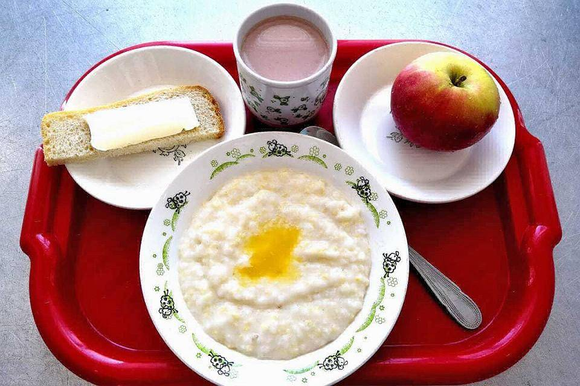
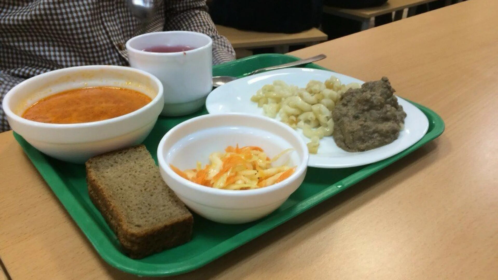
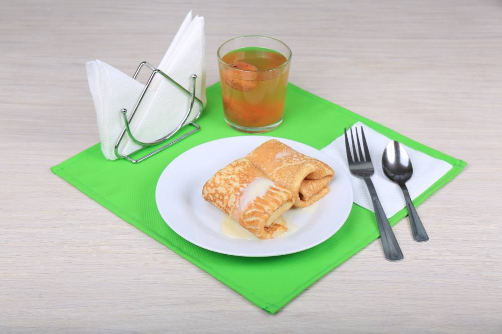

Меню

Комплексный завтрак
250₽
Запеканка(250г),какао(250мл),яйцо вареное(60г).

Комплексный обед
300₽
Куриный суп-лапша(250г),чай(250мл),кусочек хлеба(25г).

Полдник
150₽
Груша(150г),яблочный сок(250мл),печенье овсяное(1шт).
| Блюдо | Порция | Калорийность (ккал) | Белки (г) | Жиры (г) | Углеводы (г) |
|---|---|---|---|---|---|
| Гречка с курицей и овощами | 350 г (гречка 200 г, курица 100 г, овощи 50 г) |
~520 | 32 | 14 | 63 |
| Борщ со сметаной (на мясном бульоне) | 400 мл | ~480 | 24 | 22 | 46 |
| Салат «Цезарь» с курицей | 300 г | ~550 | 28 | 31 | 34 |